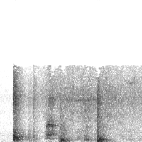

Community arts & mental health
Various art and performance works, 2012-2016
[note: this page contains an animated gif]
For most of my twenties, I was what was euphemistically known as a "mental health consumer". I had psychiatric diagnoses which caused me significant
disability and resulted in several psychiatric hospitalisations. During this time, I participated in various community mental health programs, most of
them arts and crafts-related. Occasionally these programs had a public outcome of some kind.
This mode of art practice is not afforded the same social value as professional arts work, but I've decided to include it in my professional portfolio anyway.
This is partly because I want to acknowledge the experiences I had in the mental health system which still inform my work today, but also because I want to
undermine the categorical distinction between these two art practices, and the tacit social judgements that are attached to them.
Despite this, I've still grouped these events on a single page, because I wanted to give myself this space to talk about why I've included them.
My documentation for most of these events is very poor; I have listed them here as best I can.
~`~`~`~
The feeling of here
Solo exhibition at the Stables Studio gallery, East Malvern, 2012.
The Stables was a community art studio for people with psychiatric disabilities run by Prahran Mission. I was a member there for two years. The studios
had a side gallery where I exhibited some prints of collages and wallhangings made from fabric and yarn.
Senseless speech
Lecture with animation playing in the background. I performed this at the World Hearing Voices Congress, a peer-run mental health conference, in Melbourne, 2013.
Somewhere over the rainbow
Group exhibition at the Substation Artspace, Melbourne, 2013.
Mind Williamstown is a community mental health organisation. I attended their programs on and off in 2013 and 2016. This show was organised by the art
program. I contributed an artist's book titled Wit's End.
Rock into recovery
Two graphite drawings printed on foamcore and displayed at Ellie's Kitchen in Newport, Melbourne. Poetry performance at Open Mind, Open Mic. All part of Mind Williamstown's Mental Health Week events, 2016.